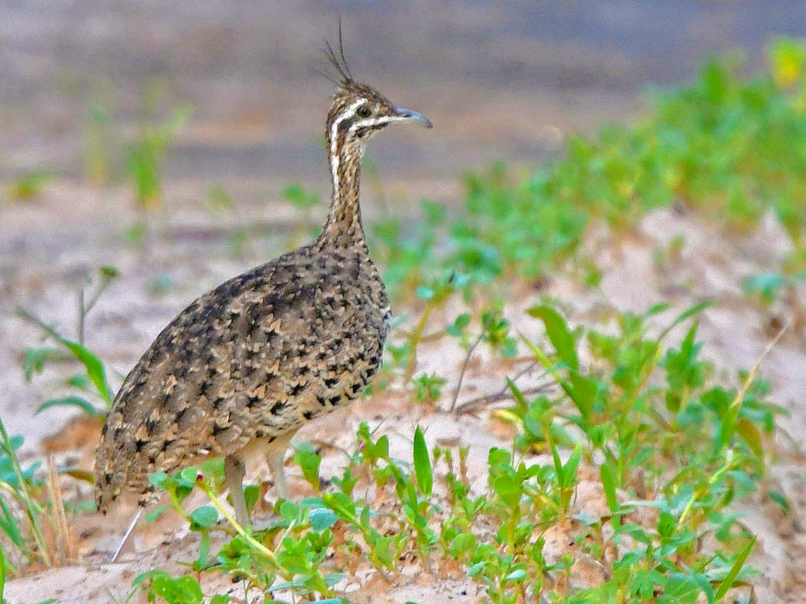

Eudromia formosa
The Quebracho Crested-tinamou is about 39 cm (15 in) in length. It's upperparts are greyish-brown to blackish with a few random small white spots. Its underparts are light buff to white and heavily banded with black. It has a long thin and straight black crest.